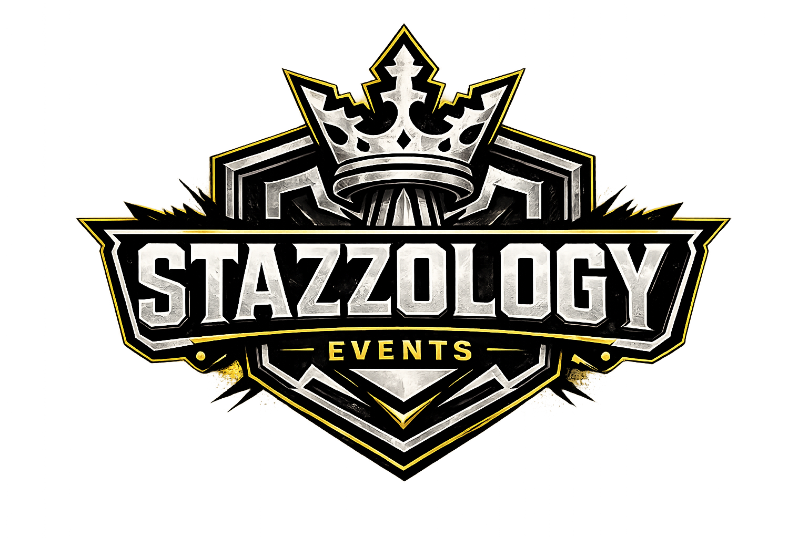

STAZZOLOGY
A. STAZZOLOGY

B. STAZZOLOGY EVENTS

TEAMS


Bites & Battles

Bites & Battles Overview
Bites & Battles was an event hosted by Kelvin “The Khamelion” Stazzland, professionally known as Stazzboi, through STAZZOLOGY Gaming at local venue MegaBites Arcade in Hemet, California on April 11, 2026.
Featuring approximately thirty competitors and additional spectators, the Street Fighter 6 double-elimination tournament served both as a competitive event and as a marketing promotion for MegaBites Arcade.
At the conclusion of the tournament, Kingston S. captured first place while David S. captured second place.
Bites & Battles represents one of the most documented and recognizable events associated with STAZZOLOGY and marked a major milestone in the promotion's development.